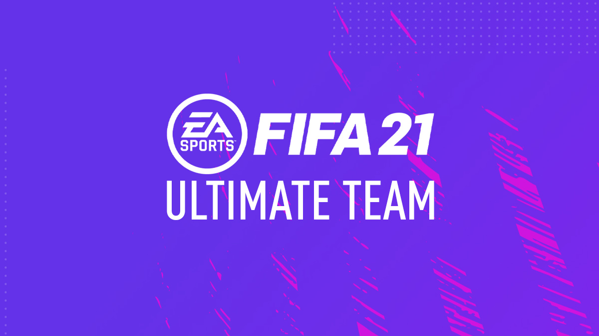

FUT mod vam pruža mogućnost da kreirate sopstveni tim, inicijalno nedostojan zonaša moravičkog okruga, i da ga postepeno unapređujete kupovinom novih igraca na marketu ili dobijanjem iz paketića.

Fifa je najpopularnija sportska simulacija.Kao takva ima u sebi vise modova igre.Pored same egzibicionalna utakmice u kojoj moze da igrate protiv AI ili protiv prijatelja tu su jos najpopularniji :FIFA Ultimate team(FUT),Career mode i Volta.
FUT mod vam pruža mogućnost da kreirate sopstveni tim, inicijalno nedostojan zonaša moravičkog okruga, i da ga postepeno unapređujete kupovinom novih igraca na marketu ili dobijanjem iz paketića.
Upravljajte svakim trenutkom tokom putovanja svog tima ka vrhu uz novu dubinu u utakmicama, transferima i treningu.
Volta Football (ulična fuca) dolazi sa par sati jednostavnih narativnih misija, koje vas vode kroz mečeve prepune fudbalskih ikona celog sveta, i pružiti vam priliku da pobedite legende i aktuelne zvezde u igrama fudbalske veštine. Na “kul skali”, svetlosnim godinama daleko od najkove legendarne “The Cage” reklamne kampanje od pre dvadesetak godina